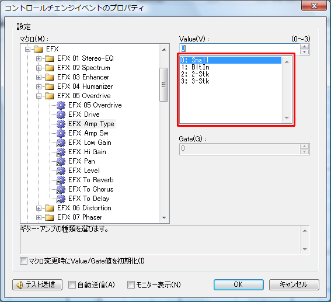

音色情報は、[マップ]、[PC]、[バンク]の三階層になっています。
音源自体にバンクが存在しなくとも、PC１つにつき１つのバンクが必要です。
例）
<Map Name="55Map">
<PC Name="Piano 1" PC="1">
<Bank Name="Piano 1" LSB="1" MSB="0" />
<Bank Name="Piano 1w" LSB="1" MSB="8" />
<Bank Name="Piano 1d" LSB="1" MSB="16" />
<Bank Name="Piano 2" LSB="1" MSB="126" />
<Bank Name="Acou Piano1" LSB="1" MSB="127" />
</PC>
<PC Name="Piano 2" PC="2">
<Bank Name="Piano 2" LSB="1" MSB="0" />
<Bank Name="Piano 2w" LSB="1" MSB="8" />
<Bank Name="Piano 2" LSB="1" MSB="126" />
<Bank Name="Acou Piano2" LSB="1" MSB="127" />
</PC>
</Map>
Mapタグ
Mapタグはマップを定義します。
Mapタグは複数定義する事ができます。
Mapタグは複数のPCタグを要素として持つことができます。
Mapタグの属性は以下の通りです。
| 属性 |
省略時 |
意味 |
| Name |
必須 |
マップ名を指定します。 |
PCタグ
PCタグはPC情報を定義します。
PCタグは複数定義する事ができます（必ず128個定義する必要はありません）。
PCタグは複数のBankタグを要素として持つことができます。
PCタグの属性は以下の通りです。
| 属性 |
省略時 |
意味 |
| Name |
必須 |
PC名（楽器名）を指定します。 |
| PC |
必須 |
PC番号を1～128の範囲で指定します。 |
Bankタグ
Bankタグはバンク情報を定義します。
Bankタグは複数定義する事ができます（PC１つにつきバンク１つは必須です）。
Bankタグの属性は以下の通りです。
| 属性 |
省略時 |
意味 |
| Name |
必須 |
バンク名（楽器名）を指定します。 |
| LSB |
|
Bank Select LSBとして送信する値を指定します。省略、または255を指定した場合は送信しません。 |
| MSB |
|
Bank Select MSBとして送信する値を指定します。省略、または255を指定した場合は送信しません。 |
コントロールチェンジマクロ機能は、コントロールチェンジ機能を擬似的に拡張した機能です。
マクロを定義する事で、ユーザーはコントロールチェンジと同じ感覚で様々な設定を行うことができるようになります。
そうしたマクロ情報を、ここで定義します。
例）
<Folder Name="Sample">
<CCM ID="1" Name="PitchBend" Color="#0fa806" Sync="Last">
<Value Min="-8192" Max="8191" Offset="8192" />
<Memo>音程を変化させます。</Memo>
<Data>@PB #VH #VL</Data>
</CCM>
<CCM ID="161" Name="Dr:Level">
<Value />
<Gate Type="Key" />
<Memo></Memo>
<Data>@NRPN 1AH #GL #VL #NONE</Data>
</CCM>
<CCM ID="259" Name="Part Mode">
<Value Max="2">
<Entry Label="Normal" Value="0" />
<Entry Label="Drum1" Value="1" />
<Entry Label="Drum2" Value="2" />
</Value>
<Memo>通常の楽器パートか、ドラムセットパートかを設定します。</Memo>
<Data>@SYSEX F0H 41H 10H 42H 12H [ 40H #1RCH 15H #VL ] F7H</Data>
</CCM>
<CCM ID="500" Name="TableTest" Color="#0fa806">
<Value Min="0" Max="3" TableID="1" />
<Memo>テーブル参照サンプルです。</Memo>
<Data>@SYSEX （省略）</Data>
</CCM>
<CCMLink ID="500" Value="1" />
</Folder>
<Table ID="1">
<Entry Label="0ms" Value="0" />
<Entry Label="0.1ms" Value="1" />
<Entry Label="0.2ms" Value="2" />
<Entry Label="0.3ms" Value="3" />
</Table>
Folderタグ
各CCMタグは、自由にフォルダを作成でき、その中へ入れることができます。
こうすることにより、ユーザーが目的のマクロを探しやすくするようにできます。
Folderタグはそのフォルダを定義します（必要ではありません）。
FolderタグはCCMタグ、Folderタグを要素として複数持つことができます（１つも無いとフォルダは表示されません＾＾；）。
Folderタグの属性は以下の通りです。
| 属性 |
省略時 |
意味 |
| Name |
必須 |
フォルダ名を指定します。 |
| ID |
-1 |
FolderLinkとしてリンクを貼る必要がある場合に0以上のIDを指定しておきます。 |
CCMタグ
CCMタグはコントロールチェンジマクロ（ControlChangeMacro）を定義します。
CCMタグは複数定義する事ができます。
CCMタグはValueタグ、Gateタグ、Memoタグ、Dataタグを要素として持つことができます。
CCMタグの属性は以下の通りです。
| 属性 |
省略時 |
意味 |
| ID |
必須 |
マクロIDを指定します。IDは0～1300の範囲で、重複しないでください。 |
| Name |
必須 |
マクロ名を指定します。 |
| Color |
#000000 |
イベントリスト上の表示色を指定します。 |
| Sync |
|
[MIDI機器と状態を合わせる]機能を使う際、この属性を利用します。
未指定・・・何も処理しません。
Last・・・イベントリスト上で、最後のイベントだけを処理します。単独でいつ実行しても効果があるイベントに付けておくと良いでしょう。
LastEachGate・・・Lastはイベント毎の処理ですが、LastEachGateはイベント＆Gate毎に処理します。Gateを音階として利用しているドラムパラメーター変更系イベントで用います。
|
| MuteSync |
|
[トラックの演奏]がオフの際、このコントロールチェンジマクロも送信したくない場合は、"1"を指定してください。 |
Vauleタグ、Gateタグ
Valueタグ、Gateタグの属性などは同一です。
ValueタグはイベントのValue値の範囲などを定義します。
GateタグはイベントのGate値の範囲などを定義します。
定義しない場合は、Value欄/Gate欄は無効となります。
Valueタグ、GateタグはテーブルのデータとしてEntryタグを複数持つことができます（無くても構いません）。
Valueタグ、Gateタグの属性は以下の通りです。
| 属性 |
省略時 |
意味 |
| Default |
0 |
デフォルト値を指定します。 |
| Min |
0 |
最小値を指定します。 |
| Max |
127 |
最大値を指定します。 |
| Offset |
0 |
実際にデータを送信する際にプラスする値を指定します。
例えばパンポットは-64から+63の範囲で指定しますが、midi機器に送信する際にはこの値に+64してから送信しないといけません。こうした場合にはOffsetを64に指定します。
|
| Name |
|
値の名前を指定します（あまり画面には出てきません）。 |
| Type |
|
「Key」を指定するとプロパティ画面でキーボードを参照するボタンが出ます。 |
| TableID |
|
共通テーブルを使用する場合にはテーブルIDをここで指定します。 |
Entryタグ
Entryタグはテーブルの１データを定義します。
EntryタグはGateタグやValueタグ、Tableタグの要素として複数定義します。
Entryタグの属性は以下の通りです。
| 属性 |
省略時 |
意味 |
| Label |
必須 |
表示するテキストを指定します。 |
| Value |
必須 |
値を指定します。 |
こうしてテーブルを定義すると、ユーザーは値だけでなく、表から選ぶことができるようになります。

Memoタグ
Memoタグは、コントロールチェンジマクロのメモを定義します。
コントロールチェンジイベントのプロパティ画面などで利用されます。
文中に改行を入れたい場合は「\n」と記入してください。
Dataタグ
DataタグはMIDI機器にどんな情報を送信するのかを定義します。
Dataタグの内容は、アットマークの付いた命令コマンドと、値（固定値・変動値）を組み合わせて定義します。
例）
<Data>@NRPN 1AH #GL #VL #NONE</Data>
命令や値はスペースで区切ってください。
「@命令コマンド 値 値 ・・・ @命令コマンド 値 値 ・・・」のようにいくつも定義することができます。
（ただし、実際に処理されるのは同時期ですので、重たい処理をいくつも同時に送信させるのはよくありません。）
命令コマンドの一覧は次の通りです。
| 構文 |
意味 |
| @PB [HighValue] [LowValue] |
ピッチベンドを送信します。 |
| @CP [Value] |
チャネルプレッシャーを送信します。 |
| @PKP [Key] [Value] |
ポリフォニックキープレッシャーを送信します。 |
| @CC [ControlChangeNumber] [Value] |
コントロールチェンジを送信します。 |
| @SYSEX F0H ..... F7H |
システムエクスクルーシブを送信します。
[ と ] を使用すると、囲った部分のチェックサムを ] 部分へ自動的に挿入してから送信します。 |
| @RPN [RPN MSB] [RPN LSB] [Data MSB] [Data LSB] |
RPNを送信します。 |
| @NRPN [NRPN MSB] [NRPN LSB] [Data MSB] [Data LSB] |
NRPNを送信します。
|
命令コマンドに引き続いて決まった数だけ値を指定する必要があります。
１０進数の固定値を指定するには「1」や「10」のように記入します。
１６進数の固定値を指定するには「1h」や「10H」、「0x20」のように記入します。
固定値だけでなく、変動する値も利用することができます。
変動する値（および特殊な値）一覧は次の通りです。
| 構文 |
意味 |
| #NONE |
値そのものを持ちません。@RPNの[Data LSB]部分で利用できます。 |
| #VL |
Value値の下位7bitを参照します。 |
| #VH |
Value値の上位7bitを参照します。 |
| #GL |
Gate値の下位7bitを参照します。 |
| #GH |
Gate値の上位7bitを参照します。 |
| #CH |
チャンネルを元に00H～0FHまでの値を作ります。 |
| #1CH |
チャンネルを元に10H～1FHまでの値を作ります。 |
| #2CH |
チャンネルを元に20H～2FHまでの値を作ります。 |
| #3CH |
チャンネルを元に30H～3FHまでの値を作ります。 |
| #PCH |
Aポートの場合、チャンネルを元に00H～1FHまでの値を作ります。
同様にBポートは10H～1FH、Cポートは20H～2FH、Dポートは30H～3FHの値を作ります。
Eポート以降は常に00Hとなります。
汎用的な音源定義ファイルでは使用しないでください（ポートの影響を受けるため）。
|
| #1RCH |
ローランド社の音源マニュアルで「1x」（xはブロックナンバー≒チャンネル）と表記されている部分の値を作ります。 |
| #2RCH |
ローランド社の音源マニュアルで「2x」（xはブロックナンバー≒チャンネル）と表記されている部分の値を作ります。 |
| #4RCH |
ローランド社の音源マニュアルで「4x」（xはブロックナンバー≒チャンネル）と表記されている部分の値を作ります。 |
| #VF1 |
Value値の1～4bitを元に00H～0FHまでの値を作ります。 |
| #VF2 |
Value値の5～8bitを元に00H～0FHまでの値を作ります。 |
| #VF3 |
Value値の9～12bitを元に00H～0FHまでの値を作ります。 |
| #VF4 |
Value値の13～16bitを元に00H～0FHまでの値を作ります。 |
#RSCTRT1
(#RSCTRT1P)
#RSCTRT2
#RSCTRT3 |
Roland社のSonicCell音源等で、Temporary Rhythm
Toneを調節する際に必要な24bit値をチャンネルとGate値（Note番号21～108）から生成します。
生成範囲は11h 10h 10hから14h 71h
3Ehです。
実際に音源定義ファイルに記述する際は #RSCTRT3 #RSCTRT2 #RSCTRT1 の順になります。
#RSCTRT1Pは#RSCTRT1に1を足したものです。
|
#RSCTPT1
(#RSCTPT1P)
#RSCTPT2
#RSCTPT3 |
Roland社のSonicCell音源等で、Temporary Patch Toneを調節する際に必要な24bit値をチャンネルとGate値（Patch
Tone番号1～4）から生成します。
実際に音源定義ファイルに記述する際は #RSCTPT3 #RSCTPT2 #RSCTPT1
の順になります。
#RSCTPT1Pは#RSCTPT1に1を足したものです。 |
| #VPGL |
Value+Gate値の下位7bitを参照します（SMFから復元されません）。 |
| #VPGH |
Value+Gate値の上位7bitを参照します（SMFから復元されません）。 |
他にも必要な値がある場合は、使い道を添えて要望を出してください。
CCMLinkタグ
CCMLinkタグは、他のCCMタグと内容がほぼ同じで、ValueやGateのデフォルト値だけ変えてその位置に配置したいときに利用します。
（SC-8850の場合は、EFXマクロで多用しています。）
CCMLinkタグの属性は以下の通りです。
| 属性 |
省略時 |
意味 |
| ID |
必須 |
リンク先のマクロIDを指定します。 |
| Value |
|
Valueのデフォルト値を変えたい場合に指定します。 |
| Gate |
|
Gateのデフォルト値を変えたい場合に指定します。 |
FolderLinkタグ
FolderLinkタグは、他ののフォルダと内容がほぼ同じで、ValueやGateのデフォルト値だけ変えてその位置に配置したいときに利用します。
（SD-80等のようなMFXが複数系統ある機種で利用されます。）
FolderLinkタグの属性は以下の通りです。
| 属性 |
省略時 |
意味 |
| Name |
必須 |
フォルダ名を指定します。リンク先と同じである必要はありません。 |
| ID |
必須 |
リンク先のFolderのIDを指定します。 |
| Value |
|
Valueのデフォルト値を変えたい場合に指定します。 |
| Gate |
|
Gateのデフォルト値を変えたい場合に指定します。 |
Tableタグ
通常テーブルは、ValueタグやGateタグの要素としてEntryタグを用いて定義しますが、
共通テーブルとしてテーブルを定義しておくと、同じテーブルを複数のマクロで使い回すことができます。
TableタグはControlChangeMacroListタグの直下もしくはFolderタグの直下で定義できます。
Tableタグは複数のEntryタグを要素に持つことができます。
Tableタグの属性は以下の通りです。
| 属性 |
省略時 |
意味 |
| ID |
必須 |
テーブルIDを指定します。0以上を指定し、重複してはいけません。 |
テンプレート機能は、CCイベントなどを複数まとめて１テンプレートとして定義しておき、ユーザーによって挿入ができる機能です。
そうしたテンプレートを情報をここで定義します。
例）
<Template ID="0" Name="トラック初期化">
<Memo>トラック初期化用テンプレートです。</Memo>
<CC ID="7" Value="100" />
<CC ID="10" Value="0" />
<PC Mode="Auto" />
<CC ID="91" Value="40" />
<CC ID="93" Value="0" />
<CC ID="94" Value="0" />
<CC ID="74" Value="0" />
<CC ID="71" Value="0" />
<CC ID="130" Value="0" />
<CC ID="11" Value="127" />
<CC ID="76" Value="0" />
<CC ID="77" Value="0" />
<CC ID="78" Value="0" />
</Template>
Folderタグ
各Templateタグは、自由にフォルダを作成でき、その中へ入れることができます。
こうすることにより、ユーザーが目的のテンプレートを探しやすくするようにできます。
Folderタグはそのフォルダを定義します（必要ではありません）。
Folderタグは複数のTemplateタグを要素として持つことができます（１つも無いとフォルダは表示されません＾＾；）。
Folderタグの属性は以下の通りです。
| 属性 |
省略時 |
意味 |
| Name |
必須 |
フォルダ名を指定します。 |
Templateタグ
要素としてMemoタグ、CCタグ、PCタグ、Commentタグを持つことができます。
これによって、テンプレートにどんなイベントを含めるかを指示します。
Folderタグの属性は以下の通りです。
| 属性 |
省略時 |
意味 |
| ID |
|
テンプレートIDを指定します。0以上を指定してください。デフォルトデータから参照する際に使用します。 |
| Name |
必須 |
テンプレート名を指定します。 |
Memoタグ
テンプレートのメモ（説明）を記入します。
メモは[テンプレート]画面で表示されます。
CCタグ
コントロールチェンジイベントの挿入を指示します。
CCタグの属性は以下の通りです。
| 属性 |
省略時 |
意味 |
| ID |
必須 |
マクロIDを指定します。 |
| Value |
|
Valueのデフォルト値を変えたい場合に指定します。 |
| Gate |
|
Gateのデフォルト値を変えたい場合に指定します。 |
PCタグ
プログラムチェンジイベントの挿入を指示します。
PCタグの属性は以下の通りです。
| 属性 |
省略時 |
意味 |
| PC |
1 |
PC番号を1～128の範囲で指定します。 |
| MSB |
|
Bank Select MSB値を指定します。 |
| LSB |
|
Bank Select LSB値を指定します。 |
| Mode |
|
Drumset・・・ドラムセットの音色モードということを指定します。
Auto・・・トラックの種類が「リズム」になっている場合はドラムセットの音色モードにします。 |
Commentタグ
コメントイベントの挿入を指示します。
Commentタグの属性は以下の通りです。
| 属性 |
省略時 |
意味 |
| Text |
|
コメントデータを指定します。 |
デフォルトデータとは、Dominoを起動した時や新規作成した際に、あらかじめ用意されているデータの事です。
このデータを定義する事ができます。
例）
<Mark Meas="2" Name="Start" />
<Track Mode="Conductor">
<Mark Tick="0" Name="Setup" />
<Tempo Tick="0" Tempo="120.0" />
<Mark Tick="1920" Name="Start" />
<EOT Tick="1920" />
</Track>
<Track Name="Setup" Ch="1">
<CC Tick="0" ID="200" />
<CC Tick="240" ID="201" />
<EOT Tick="1920" />
</Track>
<Track Ch="1" Current="1">
<Template ID="0" Tick="480" />
<EOT Tick="1920" />
</Track>
（省略）
<Track Name="Rhythm" Ch="10" Mode="Rhythm">
<Template ID="0" Tick="480" />
<EOT Tick="1920" />
</Track>
（省略）
Trackタグ
Trackタグは１つのトラック情報を定義します。
（実際は、置かれている順番どおりにトラックが作成されます。）
要素としてMarkタグ、TimeSignatureタグ、KeySignatureタグ、CCタグ、PCタグ、Commentタグ、Templateタグ、EOTタグを持つことができます。
これによって、トラックにどんなイベントを含めるかを指示します。
Trackタグの属性は以下の通りです。
| 属性 |
省略時 |
意味 |
| Name |
|
トラック名を指定します。 |
| Ch |
1 |
チャンネル番号を指定します。1～16の範囲で指定してください。 |
| Mode |
|
「Conductor」を指定すると、コンダクタートラックになります（１つのみ指定可能）。
「Rhythm」を指定すると、リズムトラックとして扱われます。 |
Markタグ
マークイベントの挿入を指示します。
Markタグの属性は以下の通りです。
| 属性 |
省略時 |
意味 |
| Name |
|
マーク名を指定します。 |
| Tick |
|
挿入する絶対Tickを指定します。無い場合は最後の指定されたStep値によって自動的に配置されます。 |
| Step |
|
このイベント以降の配置間隔を指定します。 |
TimeSignatureタグ
拍子イベントの挿入を指示します。
TimeSignatureタグの属性は以下の通りです。
| 属性 |
省略時 |
意味 |
| TimeSignature |
必須 |
拍子を指定します。例）4/4 |
| Tick |
|
挿入する絶対Tickを指定します。無い場合は最後の指定されたStep値によって自動的に配置されます。 |
| Step |
|
このイベント以降の配置間隔を指定します。 |
KeySignatureタグ
調号イベントの挿入を指示します。
KeySignatureタグの属性は以下の通りです。
| 属性 |
省略時 |
意味 |
| KeySignature |
必須 |
調号を指定します。例）C Maj |
| Tick |
|
挿入する絶対Tickを指定します。無い場合は最後の指定されたStep値によって自動的に配置されます。 |
| Step |
|
このイベント以降の配置間隔を指定します。 |
CCタグ
コントロールチェンジイベントの挿入を指示します。
CCタグの属性は以下の通りです。
| 属性 |
省略時 |
意味 |
| ID |
必須 |
マクロIDを指定します。 |
| Value |
|
Valueのデフォルト値を変えたい場合に指定します。 |
| Gate |
|
Gateのデフォルト値を変えたい場合に指定します。 |
| Tick |
|
挿入する絶対Tickを指定します。無い場合は最後の指定されたStep値によって自動的に配置されます。 |
| Step |
|
このイベント以降の配置間隔を指定します。 |
PCタグ
プログラムチェンジイベントの挿入を指示します。
| 属性 |
省略時 |
意味 |
| PC |
1 |
PC番号を1～128の範囲で指定します。 |
| MSB |
|
Bank Select MSB値を指定します。 |
| LSB |
|
Bank Select LSB値を指定します。 |
| Mode |
|
Drumset・・・ドラムセットの音色モードということを指定します。
Auto・・・トラックの種類が「リズム」になっている場合はドラムセットの音色モードにします。 |
| Tick |
|
挿入する絶対Tickを指定します。無い場合は最後の指定されたStep値によって自動的に配置されます。 |
| Step |
|
このイベント以降の配置間隔を指定します。 |
Commentタグ
コメントイベントの挿入を指示します。
Commentタグの属性は以下の通りです。
| 属性 |
省略時 |
意味 |
| Text |
|
コメントデータを指定します。 |
| Tick |
|
挿入する絶対Tickを指定します。無い場合は最後の指定されたStep値によって自動的に配置されます。 |
| Step |
|
このイベント以降の配置間隔を指定します。 |
Templateタグ
定義済みのテンプレートを利用してイベントの挿入を指示します。
定義ファイルのサイズ節約（＝メモリ節約）にもなります。
Templateタグの属性は以下の通りです。
| 属性 |
省略時 |
意味 |
| ID |
|
参照するテンプレートIDを指定します。 |
| Tick |
|
挿入する絶対Tickを指定します。無い場合は最後の指定されたStep値によって自動的に配置されます。 |
| Step |
|
このイベント以降の配置間隔を指定します。 |
EOTタグ
End of Trackの位置を指示します（無ければ自動的に追加されます）。
EOTタグの属性は以下の通りです。
| 属性 |
省略時 |
意味 |
| Tick |
|
挿入する絶対Tickを指定します。 |